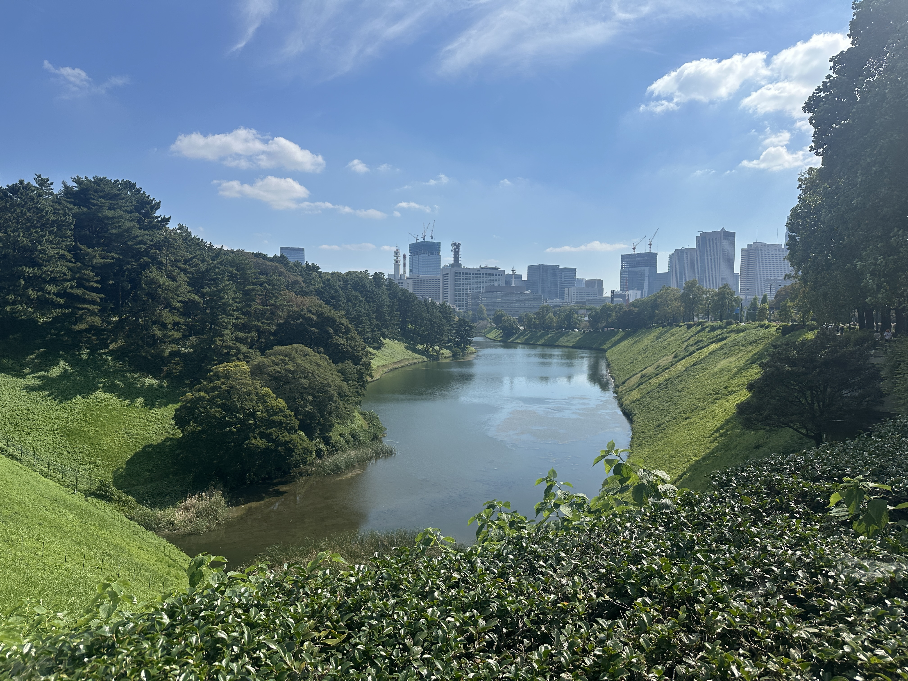
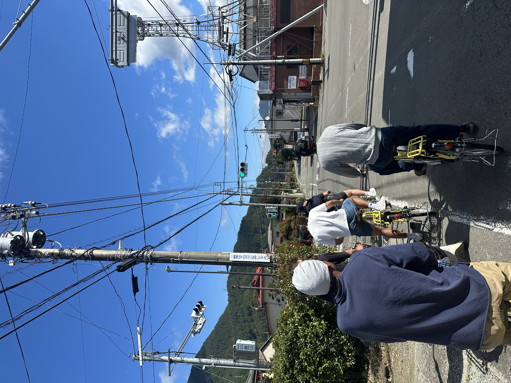
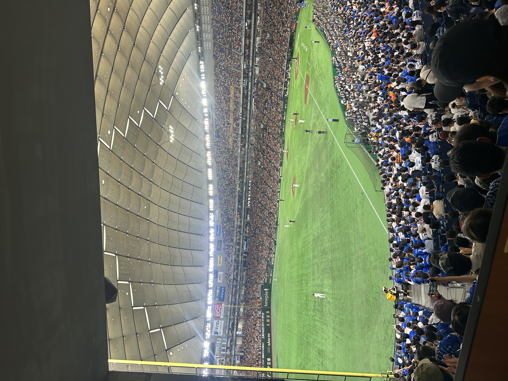
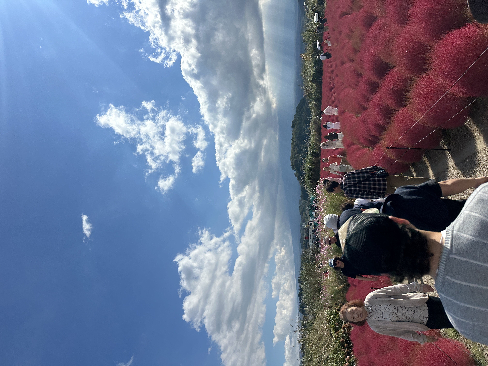
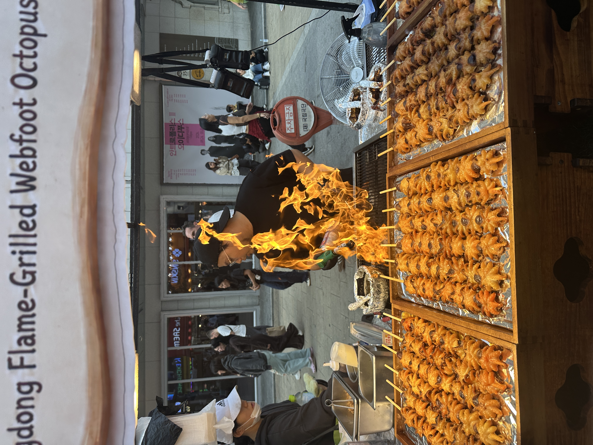
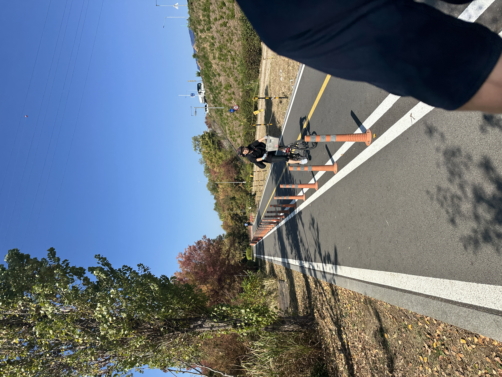

[Trip Notes]: Tokyo x Seoul, October 2026
Some scattered notes from a 10-day trip I took to Tokyo and Seoul with some good friends.
Tokyo.
Neighborhoods (cities) we visited: Shinjuku, Ginza, Akihabara, Shimokitazawa, (Kawaguchiko).
What I recommend based on my trip:
- Run around the Imperial Palace (its circumference is ~ a 5k)
- Shopping in Ginza, Shinjuku, Shimokitazawa.
- Visit Golden Gai to grab a drink.
- Go to an Onsen (ask locals for recs)1
- Take the Fuji express train to Kawaguchiko and bike around (bike rentals are ~$20 for the whole day)
- Go to a local grocery store (e.g., York Foods) and enjoy a 12-piece sashimi for ~$8.
- Drip coffee: Glitch coffee is popular, though I found the Covert coffee chain just as good without the line.
- Try omurice (we liked NikutoTamago)
- Two very good bakeries: Donsuke & Pain Maison
- Watch a baseball game at the Tokyo Dome.2
- Use Tablelog to search for local restaurants (anything above 3.6 stars will likely be very good).
Concluding thoughts:
- If I were to go to Tokyo again I’d stay in Shimokitazawa;
- and come with the intent of upgrading my wardrobe.
- If I had to go back to Japan, I’d visit Okinawa.
- The 711s are as good as advertised.
- Favorite meal: ramen at Tsukemen Gonokami.
- Bring cash ⚠️
Seoul.
These notes are more abbreviated. We spent about half as much time in Seoul as we did in Tokyo.
Neighborhoods we visited: Hongdae, Itaewan, Gangnam, Seongsu, Myeongdong, Jongno 3-ga.
- Indulge in lots of coffee and baked goods.3
- Kkanbu for fried chicken, and most places will have very good KBBQ4. Though beef is much pricier than pork.
- Get a drink at a record bar, we really enjoyed Cream.
- Go on a run along the Han river.
- The best meal I had was at a restaurant that did not have an English menu (nor a location on Google Maps).
- Jongno 3-ga5 was a nice neighborhood we wish we had spent more time in. Grabbing a meal at one of the restaurants in the alleyways by Pocha Street seemed like a nice experience.6
- Myeongdong is worth the trip for the night market and a nice stroll.
- Re-up on skincare products at Olive Young.
- If I had to go back to South Korea, I’d visit Busan.
- Bring cash ⚠️ ⚠️
Photo Gallery






Footnotes
We went to Thermae-Yu and enjoyed it.↩︎
The atmosphere was incredible, reminiscent of a European football (⚽) derby match.↩︎
I recommend Hwandae for matcha; Nu & Hitcoffee roasters for coffee; Offer for baked goods.↩︎
A high-end option we never got around to visiting is Born & Bread.↩︎
See the ranking that named it the coolest neighborhood in the world in 2026, and an interesting follow-up op-ed.↩︎
A point of reference for the alley-way is this restaurant.↩︎